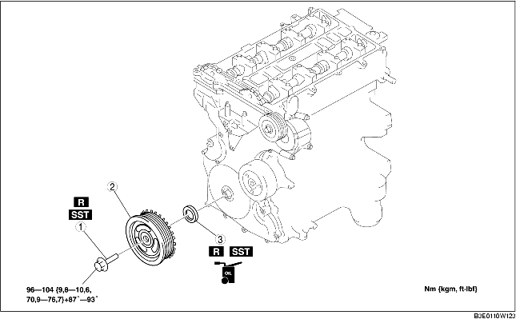

1. Verwijder de afdekplaat (Zie VERWIJDEREN/PLAATSEN AFDEKPLAAT [LF].)
2. Verwijder de steun van de afdekplaat.
3. Verwijder de accukap (Zie VERWIJDEREN/PLAATSEN ACCU [LF].)
4. Neem de minkabel van de accu los.
5. Neem de bedrading los.
6. Verwijder de volgende onderdelen.
7. Verwijder de onderdelen in de aangegeven volgorde, zie de tabel.
8. Plaats de onderdelen in omgekeerde volgorde.

.
1. Verwijder de onderste plug uit het cilinderblok.
2. Plaats SST.
3. Draai de krukas rechtsom tot cilinder nr. 1 in BDP staat (tot het balanceergewicht contact maakt met SST).
4. Houd de krukaspoelie tegen met SST's.
1. Snijd de lip van de keerring door met een hobbymes.
2. Verwijder de oliekeerring met een schroevendraaier die met een doek omwikkeld is.
1. Breng schone motorolie aan op de lip van de keerring.
2. Druk de oliekeerring een klein stukje met de hand erin.
3. Tik de oliekeerring er gelijkmatig in met SST en een hamer.
1. Plaats SST op de nokkenas zoals in de afbeelding is aangegeven.
2. Plaats de bout (M6x1,0) met de hand.
3. Draai de krukas rechtsom tot cilinder nr. 1 in BDP staat (tot het balanceergewicht contact maakt met SST).
4. Houd de krukaspoelie tegen met SST's.
5. Draai met SST (49 D032 316) de borgbout van de krukaspoelie in de aangegeven volgorde vast in de volgende 2 stappen.
6. Verwijder de bout (M6x1,0).
7. Verwijder SST van de nokkenas.
8. Verwijder SST uit het gat van de onderste plug.
9. Draai de krukas 2 omwentelingen rechtsom totdat de zuigers in BDP staan.
10. Plaats de onderste plug in het cilinderblok.